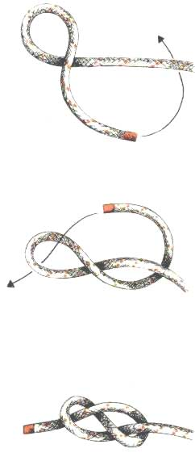

Achtknoop
Gebruik
De achtknoop is een overhandse knoop. De breeksterkte van een touw wordt tot 45 % teruggebracht zodra er een overhandse knoop in wordt gelegd. Als het werkeinde niet helemaal wordt doorgehaald, zodat er een treklus ontstaat, ontstaat er een iets sterkere (45-50%) stopperknoop, die zelfs te gebruiken is voor het besnaren van muziekinstrumenten. Bij de scouts wordt een achtsteek vooral gelegd om te vermijden dat een touw uitrafelt. Om te voorkomen dat vallen, schoten, vlaggenlijnen enz. uit hun blokken of lijogen schieten is een achtsteek ook goed bruikbaar.
Het is niet nodig om de knoop strak aan te trekken, maar doet men dit wel, dan moet ervoor gezorgd worden dat het uiteinde van de tamp (= einde van een touw) een stukje buiten de knoop uitsteekt, zodat men de tamp goed kan vastnemen als de knoop in een blok geschoten is.
Methode
Men neemt de tamp en kruist hem boven over het vaste part. Vervolgens slaat men de tamp onder het vaste part door en steekt hem door de in de eerste fase gevormde lus. De knoop wordt aangetrokken, waarbij men de tamp enkele centimeters laat uitsteken.
